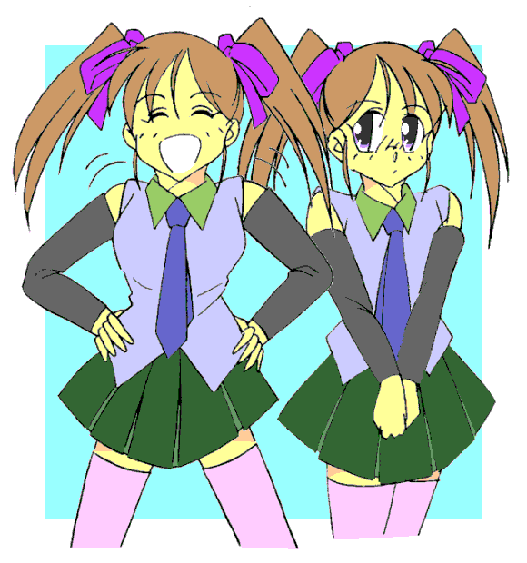
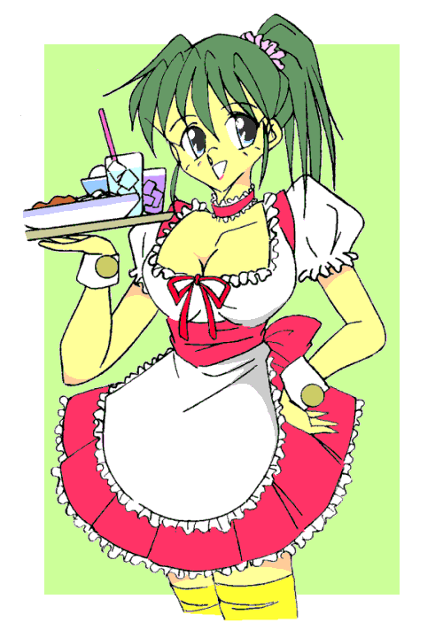

俺の名前は藤丸和也。１７歳の高校二年生。藤丸家の一人息子だ。
藤丸家はじっちゃんまでは代々忍者の家系だったらしいけれど、親父はごく普通のサラリーマンをしている。
ところがお盆前のある日、突然田舎からやってきたじっちゃんから、俺は藤丸家に代々伝わるという奥義『陰画移し』を伝授された。それは写真に撮った人物の姿に変身できるという忍術だ。
それからの俺は、幼馴染の風野麻美に成りすましたり、アイドルの詩織ちゃんとして振舞ったりして、その術で女の子になることを楽しんていた。
でもある日、麻美にそのことがバレてしまったんだ。
麻美に言われるまま、彼女の従姉妹の祐美ちゃんの姿になってドーム遊園地に連れていかれ、そこで特撮ドラマ『オーシャン電撃隊』のショーに参加して……子どもヒロインコンテストに優勝してしまった。
そして今、俺はその時手に入れた、『オーシャン電撃隊』のメンバーと一緒に写った写真を前にほくそ笑んでいた。
愛用のデジカメで撮ってもらったその写真には、『オーシャン電撃隊』６人のメンバーと麻美、そして祐美ちゃんの姿になった俺が一緒に写っている。
「大人のおねえさん、ピンクバーディとイエローホークを同時ゲットだぜ……ふふふ、早速ピンクバーディになって、大人の女性を堪能させてもらうとしましょうかね〜」
二人の女性戦士の一方、ピンクバーディに「狙い」を定めた俺は、写真をじっと見詰めた。
「奥義いくぜっ！」
奥義４
作：ｔｏｓｈｉ９
ピンクバーディは、ピンクの戦隊スーツにぴっちりと包まれた巨乳と見事にくびれた腰、そして張り出したお尻が魅力的なダイナマイトボディのお姉さん、そしてイエローホークは長身でスポーツで鍛えられているのがスーツの生地越しにもわかる、カモシカのような精悍な肢体のお姉さんだった。
俺は両手で印を結ぶと、写真に写っている面々の中から選んだピンクのマスクと戦隊スーツ姿の女性に意識を集中した。
徐々に身体が小さく縮み始め、やがて写真に写った彼女と同じ大きさになると、俺は写真に向かって飛び込んだ。
そして、自分の身体が戦隊スーツを着たピンクバーディの姿に変わっていることを確かめると、気合を入れて写真の中から飛び出そうとした。
だが──
「……！？」
写真の外へ飛び出そうとした俺の足首を掴まれた……と感じた次の瞬間、俺は写真の中のステージに引き倒されていた。
「……い、イテテテっ、……なっ！？ 何だ！？」
写真の中で他の誰かに身体を掴まれる。こんなことは、はじめてだった。
「行かせないぜ、本物さんよ」
「……！？ だっ、誰だっ！？」
ステージの床に這いつくばった俺の目の前に、うすら笑いを浮かべた祐美ちゃんが仁王立ちしていた。
「祐美ちゃん？ いや……俺？ ……ど、どういうことだっ！？」
しかし目の前に立つ祐美ちゃん──の姿をした俺？は、それには答えずまわりを見渡すと、
「お前たちは本物さんの相手をしてあげな。外の世界に出るのはこの俺だ、あばよ……とおっ！！」
そう言って大きくジャンプすると、祐美ちゃんは写真の外に飛び出していった。
「お、おいっ！ ちょっと待て…… ……っ！？」
一方の俺は、周囲を『オーシャン電撃隊』の残り５人のメンバーと、麻美に取り囲まれていた。
「ご命令だ。覚悟するんだな、ピンクバーディ」
「ちょ、ちょっと待て！ お前らオーシャン電撃隊の仲間だろう」
「我らはこの世界の住人、外界の人間など我らの仲間ではない」
一斉に飛び掛ってくるレッド、ブルー、ホワイト、ゴールド、イエロー。そして横にいた麻美もその中に加わって俺の身体を押さえつける。
「……やっ、やめろおぉ〜っ！！」
６人にもみくちゃにされ、俺は気を失った……
「う、う〜ん……」
……気がつくと、俺は上半身と脚をロープでぐるぐる巻きにされ、両手も後ろ手に縛られてステージの上に寝転がされていた。
相変わらず身体は戦隊スーツを着たピンクバーディのままだ。
巨乳に食い込んだロープが痛い。
「痛いじゃねーか……縛るにしても、こんなにきつく縛ることないだろっ」
「うるさいっ。敵にそんな情けをかける必要ないわっ」
麻美？が俺を睨みつける。
「全く……麻美の顔でそんな憎々しげに睨まれるとはな──」
確かに麻美は怒りっぽいが、こんな冷たい睨み方はしない。
「うふふ……へらず口はそれくらいにしておいたら？ これを見なさい」
「……なっ！？」
写真世界の麻美がコンパクトを取り出す。そこには、俺の部屋が写しだされていた。
部屋の中には、祐美ちゃんだけが一人立っている。
「くっくっくっ、遂に外に出られたぞ……俺はもう自由だっ」
腕を十字を組んでばっと広げると、祐美ちゃんの服と姿が身体からぼろぼろと剥がれていき……そこから “俺” が現れた。
「バカな本物め……いや、今日から俺が本物の藤丸和也だな」
その時、ドアを開けて麻美が部屋の中に入ってきた。
「あら？ 和也いたの？」
「おっ、麻美か」
「いったいどこに行ってたのよ」
「へへへ、ちょっとな」
「またなんか企んでいたんでしょ？ 全くなんであんたが、あんな変な術を伝授されたんだか──」
「麻美、気がつけっ。そいつは偽者だっ！」
俺は、寝転がされたまま、会話している二人を映し出しているコンパクトに向かって叫んだ。
「無理無理、ここからいくら叫んでもあっちに聞こえる訳ないじゃない。まったく馬鹿なんだから」
こちらの麻美が蔑むように俺を見下ろす。
「うるせえっ！」
鏡の向こうでは、部屋から出て行こうとする麻美の背後に、写真世界の俺が忍び寄っていた。
その両手が、麻美にゆっくりと伸ばされていく……
「ふふふ……俺以外の人間も写真世界の住人とすりかえてやるぜ。まず手はじめに麻美からだ──」
だが、偽者の俺が麻美の首に手をかけようとしたその寸前、再び部屋のドアが開いた。
「……！」
外に立っていたのは、田舎に戻ったはずのじっちゃんだった。
「あっ、和也のおじいさん？ お久しぶりです」
「おや？ 麻美ちゃんもいたのか。久しぶりじゃのう」
「でも急にどうしたんですか？ またこっちに来られるなんて」
「うむ、和也のことがちと気になってな……大事なことを伝え忘れていたのを思い出したんじゃ」
「大事なこと？ ケータイで連絡すれば早かったんじゃ？」
「わしはあんなものは持たん主義じゃ。それに、こればかりは本人に直接伝えぬとならんからのう……」
そう言ってじっちゃんは、慌てて両手を背中に回した偽者の俺に視線を移した。
「和也」
「な……何だい？ じっちゃん」
「ふむ──」
じっちゃんはじっと偽者を見詰める。
「な、なんだよ……？」
「いや、何でもない。……それより喉が乾いたわい。和也、何か飲み物を持ってこい」
「急に訪ねてきといて、いきなりなんだよ──」
「いいから早くするんじゃ。……あ、麻美ちゃんの分も忘れずにな」
麻美ちゃんの分──というところだけ、妙にしゃべり方が優しくなるな。
「全く人使いが荒い年寄りだぜ……今持って来るから待ってろよ」
ぶつぶつ言いながら、偽者は部屋を出て階段を下りていった。
「ふむ……さてと──」
「おじいさん、どうしたんですか？」
「麻美ちゃん、すまんがちょっと下がっていなさい」
じっちゃんはこちらを……いや、写真を見ているようだ。……もしかして気がついてくれた？
「ふんぬっ！ ……かああああ〜っ！！」
印を結んだじっちゃんの身体はみるみる小さくなり、そして気合いとともに写真の中へ飛び込んできた。
いや、写真の中に入ったじっちゃんの身体は、あっという間に写真世界の麻美の中に吸い込まれていた。
「…………ふむ、よしよし、わしの術もまだまだ捨てたものではないな」
そう言いながら写真世界の麻美を乗っ取ったじっちゃんは、その手で俺の縄を解いてくれた。
「……そんな成りをしているが、お前、和也じゃな？」
「俺のことがわかるのか？ じっちゃん」
「もう少し早く気がつけば良かったのじゃが……少し遅かったようじゃの。とにかく話は後じゃ。ここを出るぞい」
だが、写真世界の電撃隊メンバーが、俺と麻美──の姿をしたじっちゃんの前に立ち塞がった。
「待てっ、ここからはこのオーシャン電撃隊が一歩も通さんっ！」
「引っ込んでおれ虚像どもっ！ かぁあああああ──っ！！」
じっちゃんは気合いとともに右手の掌を向けた。すると連中の動きがピタリと止まった。
「出るぞ、和也。……ついてこれるな」
「もちろん！」
ミニスカート姿のまま、麻美──じっちゃんがジャンプする。見上げるとパンツが丸見えだ。
「……よし俺もっ」
俺もステージを蹴って飛び上がり、写真の中から現実世界へ飛び出した。
部屋に降り立つと、そこには二人の麻美がいた。一人は目を丸くして驚いている本物の麻美、もう一人はじっちゃんが変身した姿だ。
「え……何？ あたし？ で、でも和也は下に降りてったし……あっ！ まさかおじいさん？ なのになんでピンクバーディまで出てくるの？」
ぱっと見全く見分けがつかないが、もう一方の麻美がこっちに向き直り、姿に似合わないじっちゃんの口調で話しかけてきた。
「大丈夫か？ 和也」
「ま、まあな……でも一時はどうなることかと思ったよ。……ありがとう、じっちゃん」
「ええっ？ あんたが和也？ じゃ……じゃあさっきまで、ここにいたのって──」
「いや、ワシの方こそ大事なことをすっかり伝授し忘れておった……面目ない」
「ええっ？ まだ伝授していないことがあったのか？」
「……うむ」
「ちょっと和也っ！ おじいさんっ！ いったい何がどうなってるのよっ！？」
「そうだっ、それって偽者の俺が現れたことと何か関係があるのか？ そもそも今何が起きてるんだ？ じっちゃん、教えてくれ」
「……実はな、奥義『陰画移し』にはやってはならぬ禁じ手があるのじゃ──」
「禁じ手？」
「そうじゃ。自分の姿が写った写真を『陰画移し』に使ってはいかんのじゃ」
自分が写った写真？ ……ああそうかっ！ 祐美ちゃんになってたけど、確かにあれには俺も写ってたよな。
床に置いたその写真を拾い上げて見てみると、確かに写っていたはずの祐美ちゃん（俺）、麻美、ピンクバーディの三人が消えていた。
じっちゃんが麻美の、そして俺がピンクバーディの姿になっているのだから……
「それって……自分が写った写真を使ったら、自分の分身が現れるとか？」
「その通りじゃ。そして動き出した分身は本物に成り代わろうとする。もし本物が写真の中に一昼夜閉じ込められたままになると、永遠に写真の世界の住人となってしまうのじゃ。即ち、その時から偽者が本物となり、本物が偽者になってしまう」
「ええっ！？」
「じゃ、じゃあさっきまでの和也は、写真の中から出てきたっていうの！？」
「ああ心配せずともよい。お前はこうして現実世界に戻ってきたのじゃから、自動的な交代は起こらぬ。じゃが──」
「じゃが……何なんだよ？ もったいぶってないで教えてくれよ」
「うむ、このまま時が過ぎると偽者もまた “本物” になってしまうのじゃ。つまり本物が二人存在するという困った状況になってしまうのじゃよ。……口伝によると、その場合は斬り合って決着をつけたらしいの。生き残ったほうが本物という訳じゃ」
麻美の姿のまま真顔で言うじっちゃんの言葉に、俺は身震いした。
「そんなあ……俺、殺し合いなんてできないよ」
「心配せずともよい。方法はある」
「じっちゃん、どうすればいいんだ？」
「偽者が外の世界に出てから一昼夜、つまり２４時間以内に、念を込めた『陰画移し』用のカメラで彼奴を撮ることじゃ。さすれば偽者は写真の世界に引き戻される」
「そ、そうか、それじゃ早速──」
俺は机の上に置いた愛用のデジカメを手に取った。偽者がこの部屋に戻ってきて扉を開けた瞬間に、すぐにこれで写真を撮ればいいのだ。
だが──
「貴様……戻ってこられたのかっ！？ くそっ！」
「あっ！？ まっ、待て！」
ジュースの注がれたグラスを載せたお盆を持って部屋に入ってきた偽者の俺は、俺の姿を見るなり、お盆を叩きつけて踵を返し、俺が怯んだ隙に一気に階段を駆け下りると、玄関から外へ飛び出した。
カメラを向ける暇など全くない、一瞬の出来事だった。
「……無駄じゃ。撮られれば写真世界に引き戻されることなど、彼奴自身百も承知しておる。易々と撮られるわけがなかろう」
「じゃあどうすればいいんだ？ じっちゃん」
「何、本物と気づかれぬように近づき、瞬時に写真を撮ればよい。人知れず影のように忍び寄る……忍者ならそれくらい訳なかろう」
「そんなの無理だってば」
涼やかな顔で「忍者ならそれくらい訳なかろう」と言ってのけるじっちゃんに、俺は思わずごちた。
「やれやれ、わかっとらんようじゃのう……」
「……え？」
「和也、その被り物を取ってみい」
「被り物？ マスクのことか？」
そこでようやく、俺は自分が未だにピンクバーディの戦隊スーツ姿のまま──しかもフルフェイスのマスクを被ったままだということに気がついた。よっぽどテンパってたらしい。
言われた通りにマスクを外すと、改めて顔に解放感を感じた。
「ほお……なかなかのべっぴんじゃの」
「うわぁ、オーシャン電撃隊のピンクバーディって、中田理恵だったんだ。元アイドル体操選手で、引退してからアクション専門女優で活躍してるって千秋から聞いたことがあるけど……そっか、胸が大きくなりすぎて体操を引退したって噂は本当だったのかもね。……えいっ♪」
説明口調でそう言いながら後ろに回り込んだ麻美が、いきなり俺の胸に両手を伸ばして、むにゅむにゅと揉みしだいてきた。
「ひ、ひやぁっ！？ や──やめろ〜っ！」
両胸をぎゅっと掴まれる感触は、気持ちいいというよりむしろ痛い。俺は麻美の手を払いのけた。
「ふーん、かわいいっ♪ 明子や秀美が見たらきっと喜ぶだろうな」
俺の顔と胸をじろじろと交互に見る麻美。膨らんだ胸元をガン見されて、俺は何だか恥ずかしくなってきた。
「お、おい、そんなに見るなよ……」
無意識に両腕で胸をかばってしまう。
頬がほてってくるのを感じる。
「……これこれお前たち、そんなことをしている場合ではなかろうっ。わかっておるのか！？」
「う……」「す、すみません」
麻美の姿をしたじっちゃんに一喝され、俺と麻美はあわてて頭を下げた。
「よいか、和也。今のお主の顔は、まだ偽者には割れていない筈じゃ。わかるな」
「なるほど、確かに今までずっとマスクを被ったままだったし、俺もピンクバーディが中田理恵だったなんて知らなかった。……ってことは、この姿で近づいても偽者の俺は気づかない？」
「そういうことじゃ……まあ、顔はわからぬとも、そのチチはわかるかもしれんがな。かっかっかっ」
じっちゃんが両手を腰に当ててカラカラと笑うが、麻美の姿だとどうにも似合わない。

「で、おじいさん、和也に何をさせる気なんです？」
麻美が不安そうに、自分の姿をしたじっちゃんに声をかける。
「彼奴はスケベじゃ」
「はい！？」
「偽者とはいえ、性格は和也と同じ。つまり女には目がないということじゃ」
「いやじっちゃん、それちょっと言い過ぎ……」
「そうなのか？ おぬしの女性を見る尋常ならざる視線──このわしの目はごまかせんぞ」
「……うーん」
俺が女性を見ていたのは、自分もその子になってみたいって思いながら見ているからで、別にスケベて訳じゃ……
「で、俺にどうしろって？」
「『お色気の術』じゃ」
「は！？」
「色仕掛けで油断させ、その隙に写真を撮ってしまうのじゃよ。くノ一の最も基本的な技じゃぞ。そして『陰画移し』使いにとってもな。にょほほほ」
「じっちゃん、麻美の顔で変な笑い方するなよ……」
麻美の姿をしたじっちゃんが身体をくねらせて妖艶に笑う。元がじっちゃんとわかっていても、妙に色っぽい。
「ともかくじゃ、早く支度せい。……それとも和也、お主、偽者と斬り合って決着をつけるか？」
「わ、わかったよ。やる、やるけどさ……でも、その『お色気の術』ってどうやるんだよ？」
「そのチチでパフパフと……それから………… ……どうじゃ？」
「ええっ！？ やだよ、俺」
「…………」
麻美が黙ったまま、ジト目で俺とじっちゃんを睨んでいる。
前言撤回。もしかしたら写真世界にいた偽麻美の視線とタメをはるかもしれないな……
「全く……よいか、忍者たる者、自分の不始末は自分でつけるものじゃぞ」
「でも俺、忍者じゃないし」
「何を言うか。奥義を引き継いだ今、お主は正当な藤丸家第十四代の忍者じゃ。覚悟を決めいっ」
「わ、わかったよ」
観念した俺を見てうなずくと、じっちゃんは麻美に声をかけた。
「麻美ちゃん、和也のケータイ番号は知っておるな？」
「は、はい」
「偽の和也を呼び出してくれ、彼奴を食事に誘うのじゃ」
「食事に、ですか？」
「場所は……そうじゃな、ロイヤルホステスがよかろう」
「駅近くの？ おじいさん、よくご存知ですね」
「そりゃまあ、あの店の女給はなかなかのべっぴん揃いじゃし……おおっと、そんなことはどうでもよい──」
「じっちゃん……」
……ったく、スケベなのはどっちだよ。
俺もジト目でじっちゃんを睨みつける。じっちゃんはそんな俺の目線を咳払いしてはずした。
「こほん……じゃあ麻美ちゃん、早く電話するのじゃ。誘うのはわしがやろう」
「は、はい」
麻美はポケットからスマホを出して、画面に指を走らせた。
ＰｉＰｉＰｉＰｉ──
麻美からスマホを受け取ったもう一人の麻美──じっちゃんは軽く息を整えると、それに向かって麻美の声と口調で話し始めた。
「……もしもし？ あ、和也？ いきなり飛び出してどこに行っちゃったのよ？ おじいさんもすぐに帰っちゃったし…………え？ 表に変な人がいた？ ……あ〜何か知らないけど…………うん、うん…………ねえ、それよりこれから食事に付き合ってくれない？ あたし、和也のおじいさんからお小遣い貰っちゃった……え？ ズルい？ だから誘ってあげてるのに……うん、そう、今から？ う〜ん、仕度もしたいから、１時間後に駅前のロイヤルホステスでどお？ ……ＯＫ？ ありがとう。……うん、じゃあね」
麻美に成りきって電話を終えたじっちゃんは、俺たちを交互に見た。
「どうやら彼奴は和也のことしか見えておらなんだようじゃな……よし、では和也、急いで準備するのじゃ。……どれ、わしも……かああ──っ！」
気合いとともに麻美の姿がぼろぼろと剥がれて、その中からじっちゃんが現れた。
「和也、お主は着替えずともよい。被り物はそのまま手で持っていけ」
「ええっ？ だってこの戦隊スーツのままじゃ、偽者にすぐバレるじゃないか」
「わしに策がある、心配するな」
そう言ってじっちゃんは部屋を出て階段を下りていく。俺と麻美も顔を見合わせ、じっちゃんの後について家を出た。
１時間後……
俺は、ロイヤルホステスの女子店員の制服に着替えさせられていた。
ロイヤルホステスは、ファミレスチェーンながら女子店員のきわどい制服とメイド喫茶ばりの過剰なサービスを売りにしていて、男性客が圧倒的に多いというレストランだ。
胸元の大きく開いたブラウスに、胸を強調したピンクのベストと同じ色のフレアのミニスカート──いつか着てみたいと秘かに思っていたかわいい制服なんだが、今の俺はその制服を着ているんだ。それも巨乳の中田理恵の姿で。
「ほんとにいいな、この制服──」
更衣室の鏡の前でくるりとひるがえってポーズを取ってみた。
ブラウス下の大きな胸が、俺の動きに合わせてゆさっゆさっと揺れる。
「おっと、こんなことをしている時間はないか」
制服を着終えて更衣室を出た俺は、従業員専用扉を開けてテーブルの並ぶ店内に入ると、麻美たちが店に来るのを待った。
何でこうなったのかと言うと、じっちゃんが店長に俺を紹介して「ドラマの撮影をしたいから協力して欲しい」と説き伏せたんだ。
突然でしかもむちゃくちゃな話だが、店長はあっさりと承知してくれた。店長が実は中田理恵のファンだったらしいということもあるが、どうやら、じっちゃんが催眠暗示か何かをかけたらしい。
店長は嬉しそうに俺と握手すると、女子店員の一人を呼んで俺の着替えを手伝うように指示した。そして彼女に連れられて更衣室に入った俺は、真新しい店の制服に着替えさせられたんだ。
着替えている俺の横では、案内してきた女子店員が目を輝かせながら俺のことを見ていた。
「あ──あのう、中田理恵さんですよね、あたしファンだったんです。この間のオリンピック、応援してました。こんなところでお会いできて嬉しいです」
「そ、そう？ ……ありがとう」
俺は声を変えて、当たり障りのない挨拶で受け流した。
「今日は、ドラマの撮影なんですか？ がんばってくださいね」
「え？ え、ええ……」
その女子店員を見ているうちに、俺はある作戦を思いついた。
「ね……ねえ、あなたにも手伝ってもらいたいんだけど、いいかな？ えーっと」
「安奈未来です。お店では『アンミラ』って呼ばれています。……手伝うって、あたしもドラマに出られるんですか？」
「ま、まあね。いいかな？ 安奈さん」
「あ、理恵さんにも『アンミラ』って呼んでもらえると嬉しいんですけど……で、あたしは何をすれば？」
「ほら、あそこに高校生のカップルが座ったでしょう？」
「はい」
そう、俺が安奈さんと話している間に、ドアを開けて麻美と偽者の俺が店内に入ってきたのだ。
レジの前にいた女子店員が、二人をテーブルに案内していた。
「彼らもドラマの出演者なの。誰かが彼らから注文をとってきて、用意できたメニューをあたしが持っていって、あの男の子……昔付き合っていた恋人と思わぬ再会をするってシナリオなんだけど、アンミラさんに注文とってきて欲しいの。で、厨房で用意できたらあたしが持っていくから」
「へぇ〜年下の元カレとの思いがけぬ再会ですか、劇的なシーンなんですね。わかりました、そんなのお安い御用ですよ。……いらっしゃいませぇ〜」
安奈さんは、喜び勇んで麻美たちのテーブルに注文を取りにいった。それにしても、年上のお姉さんをあだ名で呼ぶなんて、何か気恥ずかしいな。
安奈さんの背中を見てそんなことを思いながら、俺は愛用のデジカメを巨乳の谷間の奥深くに押し込んだ。
「ご注文を繰り返します──」
安奈さんが、麻美と偽者の注文を復唱している。
「……あいつに気づかれる前に速攻でやらないとな。一瞬で勝負が決まる」
自分の考えた作戦がうまくいくのか確信はない。だけど、さすがにじっちゃんの言うように胸をおっぴろげてパフパフで油断させるなんてのは御免だ。必ず成功させないと。
程なくして、安奈さんが俺の元に戻ってきた。
「それじゃ、厨房で二人の注文の品が用意出来たら、理恵さんに連絡しますね」
「お願いします」
やがて、注文されたパスタが厨房の奥から出てくる。
「あの……理恵さん、大丈夫ですか？」
「え？ ええ、これくらい持てるから」
俺は、パスタの盛られた二枚の皿を載せたお盆を手に、二人の座るテーブルに近づいた。
二人の話は弾んでいるようだ。麻美の様子もどこか楽しそうに見える。
（くそぉ偽者め、麻美と楽しそうに話しやがって……麻美も麻美だ。偽者とわかってるのに、そんなに楽しそうに笑うことないだろっ）
内心そう思いながらもそれを押し殺し、営業スマイルを振りまきながら二人の前に立つ。

「お待たせしました。ご注文のゴルゴンゾーラクリームソーススパゲティと贅沢アラビアータスパゲティです。……えっと、お客様は？」
俺は偽者の顔を見つめて、にこっと微笑んでやった。
偽者の俺は頬を赤らめると、「ゴルゴンゾーラ」と答えた。俺は、胸の谷間がもろ見えになるように前かがみになりながら、テーブルに品物を置いた。
奴の視線が、俺の胸に釘付けになる……
「もぉっ、お客様ったらっ……」
俺は少し恥らう感じに胸を押さえ、はにかむように微笑んだ。
「うふっ……でも、もっと見たい？ もしかしてパフパフとか想像してない？ もっと見せたげようか？」
「あ、え──えっと……」
偽者の俺は、どぎまぎしながらも鼻の下を伸ばした。こいつ、絶対俺よりスケベだ。
俺は胸を押さえている右手を、そっと谷間に差し入れた。
そして──
「この偽者め、覚悟っ！」
俺は胸の奥から取り出したデジカメを奴に向け、すかさずシャッターを切った。
カシャッ──
「……っ！？ う、うぎゃあああっ…………きさまっ、まさかそんな……くそおおおお…………っ──」
次の瞬間、偽者の姿はテーブル席から掻き消えてしまった。
奴が手に持っていたフォークが落ちて皿の縁に当たり、ちんっと音を立てた。
「和也、やったねっ」
「ふぅ〜うまくいった。一時はどうなることかと思ったぜ……」
偽物の俺は写真の中へと戻った。祐美ちゃんの変身を解いているから、俺自身の姿で写っているはずだ。
「あ、あのう……何が起こったんでしょう？ これって撮影……特撮だったんですか？」
安奈さんが、キョロキョロと店内を見回しながら近づいてきた。突然消えてしまった偽者の俺に戸惑っているらしい。
「う、うん、実はちょっとした特殊効果で。撮影も一発ＯＫだったみたい……ね」
「そうですか……理恵さん、ドラマ楽しみにしていますねっ♪」
「あ、ありがとう──」
「……これに懲りたなら、術を使うときは気をつけることじゃ」
じっちゃんは店長に「外のスタッフと打ち合わせしてくる」と言うと、俺と麻美を連れて店を出た。俺は店の制服を着たままだ。
安奈さんが店の中から、俺に向かって手を振っていた。
「何言ってるんだよ……じっちゃんが大事な注意事項を教えてくれなかったせいで、こんなことになったんだろ」
「お、そうだったかのう〜？ ……とにかく、忍者の日常は日々修行じゃぞ。安穏な日はないと思え」
「はぐらかすなよ、全く」
「何はともあれ、奥義を伝授されたからには第十四代奥義伝承者として精進することじゃ。じきにお館様からのご命令も来ることじゃろうて」
「お館様？ なんだそれ？」
「ははは、わしはもう隠居の身じゃ。後は頼んだぞ、和也」
そう言うと、じっちゃんは駅に向かって歩き出した。
「じっちゃん、うちに寄っていかないのか？」
「なあに、また会おうぞ」
そうしてじっちゃんは、再び田舎に帰っていった。
「ま、とにかく一件落着だ……おっと」
俺はまだ、自分がロイヤルホステスの制服を着た中田理恵の姿のままだということを思い出した。
「それじゃ、もう少し楽しむとしようかな……」
俺は、着ているブラウスを大きく盛り上げている胸の谷間を覗き込もうと──
ぽかっ──！「……いてっ！」
振り返ると麻美が目を釣り上げて立っていた。右の拳に、はぁ〜っと息を吹きかけている。
「和也のバカ！ あんな目にあったのにほんと懲りないんだからっ！」
「なんだ麻美、まだいたのか？」
「当たり前でしょっ！ もう、さっさと帰るわよっ。それより……早く元の姿にもどれぇえええっ！！」
「わかったわかった……でも、もう少しだけ──な、いいだろ？ なんせあの写真はもう使えないんだから、せいぜい理恵ちゃんを楽しまないと……な」
そう言うと、俺はダッシュで逃げ出した。
「かぁずぅやぁっ！ 待ちなさいっ！！」
麻美の声を背中に、俺は走った。
ミニスカートの裾が翻り、両脚の間を夜風が心地よく通り抜けていった……
俺の名前は藤丸和也、藤丸家第十四代の奥義継承者だ。
さて、明日はどんな子に成りすましてみようか……？
「奥義、いくぜ！」
（終わり）
後書き
久々の「奥義」シリーズ、いかがでしたでしょうか。前作で伏線を貼っていたにもかかわらず、なかなか続きを書く余裕がありませんでしたが、ようやく回収できました。
またいつか新展開で書く事があるかもしれませんが、ひとまずはこれにて完結です。
ここまでお読みいただきました皆様、どうもありがとうございました。
□ 感想はこちらに □